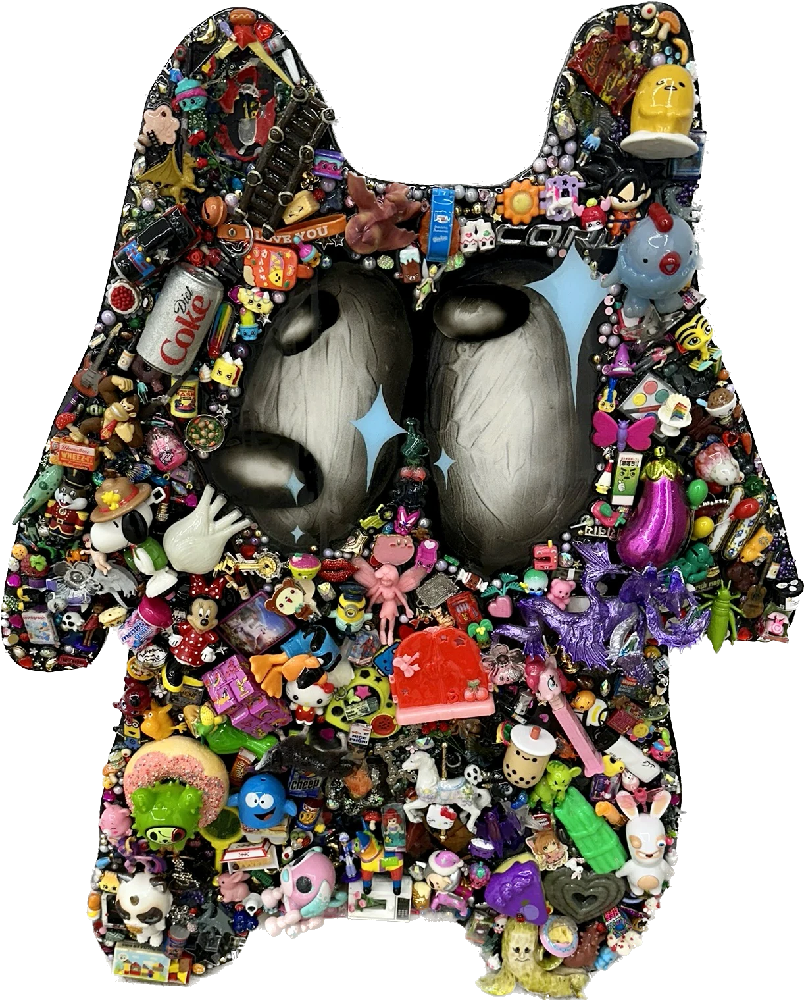
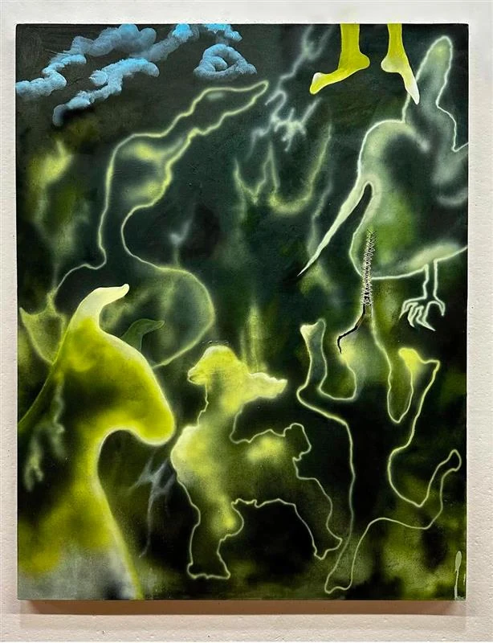
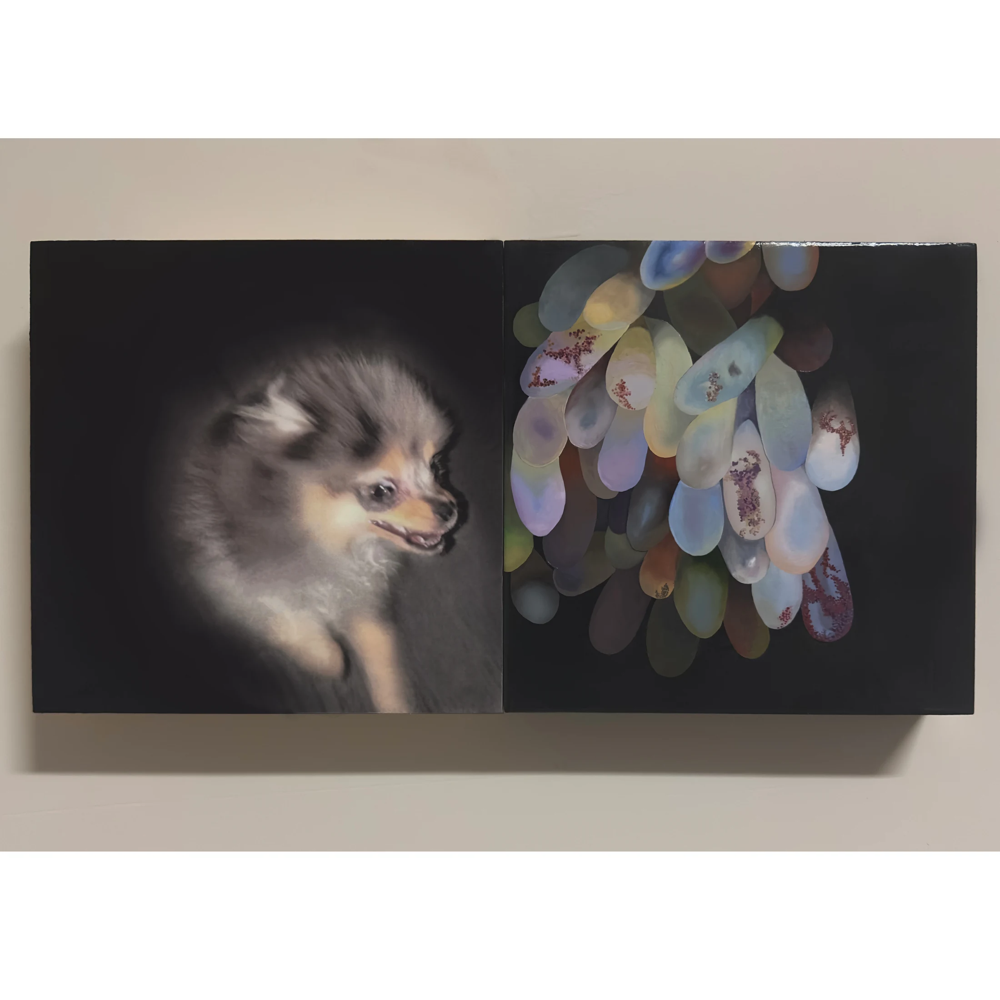
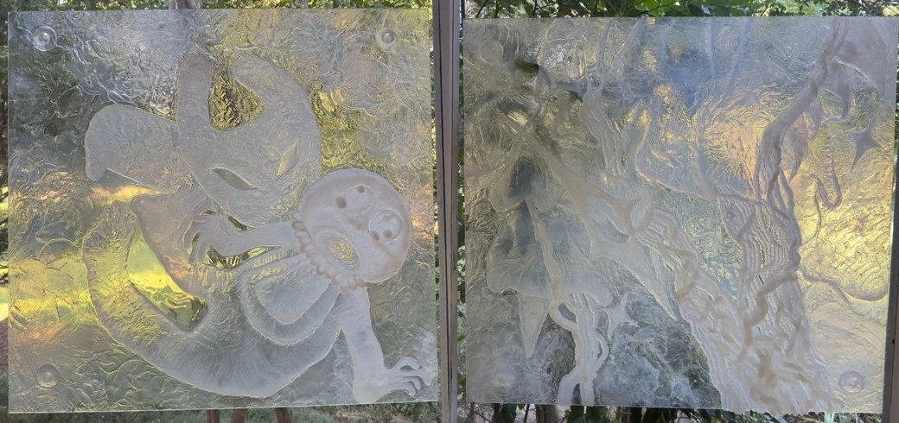
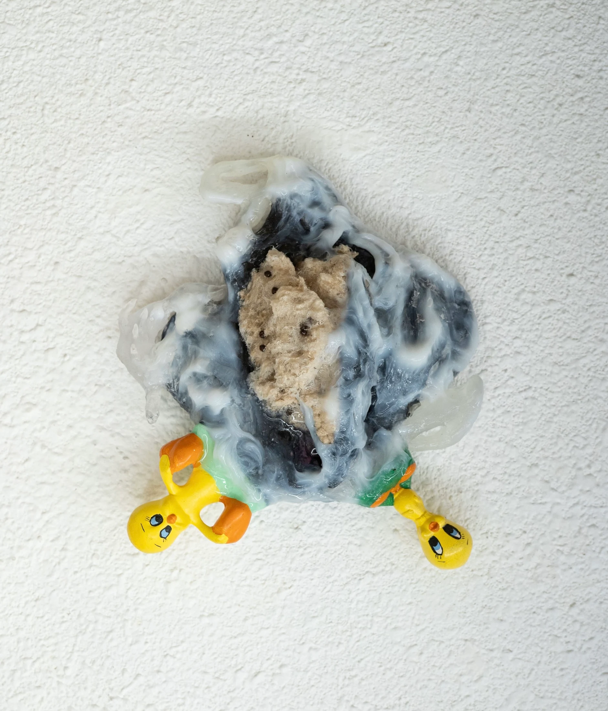
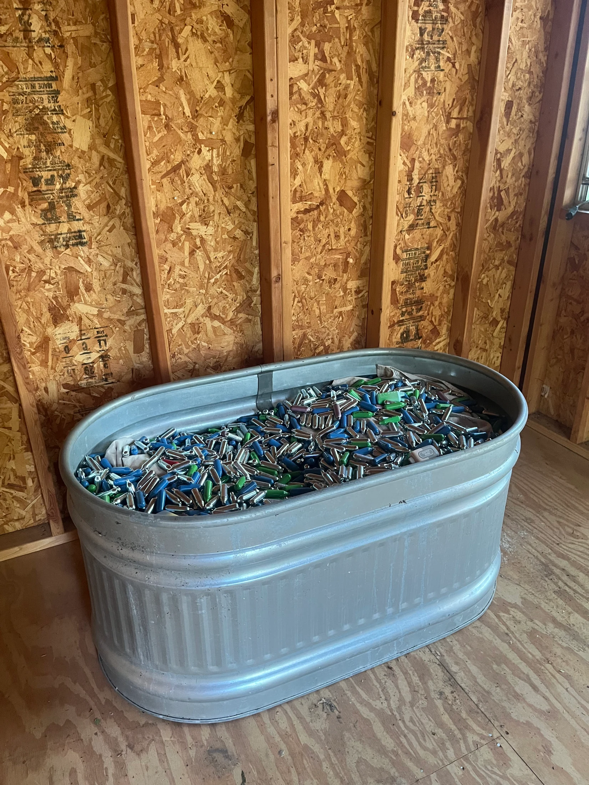

Skip to content
Hava Toobian
2025
2024
CV
Shop
Contact
Selected work, 2025 and 2024

2024

Laying
· 2025

Interior (diptych)
· 2025

Friends; It’s Good (diptych)
· 2024

SR 10
· 2025

Aftercare
· 2025
1 / 6
Ⅱ
View the artworks:
Hava Toobian artwork, 2024, view 1
Laying
Interior (diptych)
Friends; It’s Good (diptych)
SR 10
Aftercare